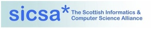

Scottish Theorem Provers Meeting
Friday 10th February 2012.
Room 14.15
Livingstone Tower.
Glasgow G1 1XH.
New. See below for the list of talks that took place, with links to the slides.
The Mathematically Structured Programming Group within the department of Computer and Information Sciences hosted the Scottish Theorem Proving Seminar on Friday 10th of February 2012.
This event was supported by the Modelling and Abstraction SICSA theme.
Talks
Talk titles are links to abstracts below, where available.
| Time | Speaker | Title |
|---|---|---|
| 11:00-11:45 | Gilles Dowek | Consistency and cut elimination : two ways to restrict resolution [slides] |
| 11:45-12:30 | Jamie Gabbay | On Proof Search [slides] |
| 12:30-13:30 | Lunch | |
| 13:30-14:15 | Edwin Brady | Type checking by theorem proving in Idris [slides] |
| 14:15-15:00 | Brian Campbell | An executable semantics for CompCert [slides] |
| 15:00-15:45 | Tea/Coffee | |
| 15:45-16:15 | Mohammed Alzahrani | Model Checking Data-Sensitive and Time-Sensitive Web Applications [slides] |
| 16:15-17:00 | David Aspinall | Querying Hiproofs [slides] |
Venue
The talks took place in Room 14.15 of Livingstone Tower, which is part of the University of Strathclyde. Room 14.15 is on the top floor of Livingstone Tower. Entrance to Livingstone Tower is from Richmonad Street. Take any of the lifts from the ground floor to Level 14.
Livingstone Tower is a few minutes walk from Queen Street Station in the centre of Glasgow. The map below shows the general area.
There is also an official university map.
Abstracts
Gilles Dowek : Consistency and cut elimination : two ways to restrict resolution
We present a restriction of Resolution modulo where the rewrite rules are such that clauses rewrite to clauses, so that the reduct of a clause needs not be further transformed into clause form. Restricting Resolution modulo in this way requires to extend it in another and distinguish the rules that apply to negative and positive atomic propositions. This method can be seen as a restriction of Equational resolution that mixes clause selection and literal selection restrictions. Unlike many restrictions of Resolution, it is not an instance of Ordered resolution.
Brian Campbell : An executable semantics for CompCert
CompCert is a C compiler developed by Leroy et al, the majority of which is formalised and verified in the Coq proof assistant. The correctness theorem is defined in terms of a semantics for the "CompCert C" language, but how can we gain faith in those semantics? We explore one approach: building an equivalent executable semantics that we can check test suites of code against.
Mohammed Alzahrani : Model Checking Data-Sensitive and Time-Sensitive Web Applications
Modeling of web-based applications is fundamental to capture and understand their behaviour. As a verification technique, model checking can assist in finding design flaws and simplifying the design of a web application, as a result the quality and the security of web application can be improved. We use the model checker SPIN to simulate and verify essential security and navigation properties of web-based data-sensitive and time-sensitive application. We integrate discrete time in Promela (SPIN's input language) model to allow us represent realistic web applications properties and track sequence of actions in a secure model and in the present of a malicious behaviour. We discuss a comparison between the tools SPIN and UPPAAL in modelling and verfiying web applications.